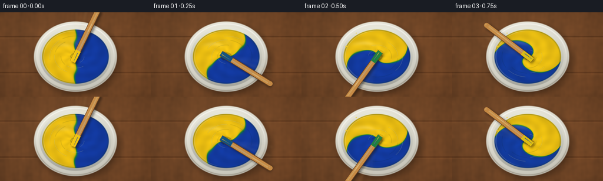
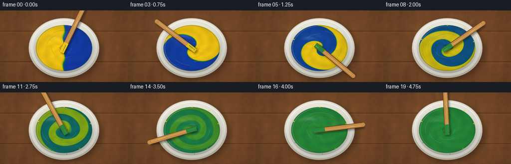

CODING AGENTS AS PIXEL WORLD MODELS
traex/GPT-5.6-Sol · material_0000
点击播放 · 原生 RGB 像素
逐轮保存的候选
回放视频、检查图与代码变化。
每份候选均可单独播放。实际图片检查记录在下方工具轨迹中。
候选 01播放与检查图
点击播放 · 原生 RGB 像素


展开代码变化
--- 上一保存版本
+++ 本次保存版本
@@ -0,0 +1,281 @@
+from pathlib import Path
+import json
+import math
+import numpy as np
+import cv2
+from PIL import Image, ImageDraw, ImageFilter
+import artifact_io
+
+CASE_DIR = Path(__file__).resolve().parent
+SPEC = json.loads((CASE_DIR / 'task_spec.json').read_text())
+W, H = SPEC['width'], SPEC['height']
+N, FPS = SPEC['frames'], SPEC['fps']
+S = 3
+WW, HH = W * S, H * S
+
+# Supersampled coordinate grid in final-pixel units.
+yy, xx = np.mgrid[0:HH, 0:WW].astype(np.float32)
+X, Y = xx / S, yy / S
+rng = np.random.default_rng(7319)
+
+# A static, softly mottled wooden worktop. All texture is generated locally.
+noise = rng.normal(0.0, 1.0, (HH, WW)).astype(np.float32)
+noise = cv2.GaussianBlur(noise, (0, 0), 2.6 * S)
+noise /= max(float(noise.std()), 1e-5)
+meander = (2.4*np.sin(X*.095 + 1.2*np.sin(Y*.047)) +
+ 1.3*np.sin(X*.29 + Y*.025) + .55*np.sin(X*.83 + 2.1*np.sin(Y*.033)))
+wood_luma = meander + noise * 1.35 + 5.0 * (X / W - .5)
+base = np.zeros((HH, WW, 3), np.float32)
+base[..., 0] = 111 + wood_luma * 1.28
+base[..., 1] = 68 + wood_luma * .72
+base[..., 2] = 37 + wood_luma * .34
+# Broad planks and seams.
+for seam in (41.5, 103.0):
+ d = np.abs(Y - seam)
+ base -= np.exp(-(d/1.05)**2)[..., None] * np.array([24, 18, 12])
+ base += np.exp(-((Y-(seam+1.8))/1.6)**2)[..., None] * np.array([7, 5, 3])
+# Gentle studio-light pool and vignette.
+light = np.exp(-(((X-95)/150)**2 + ((Y-46)/105)**2))
+base += light[..., None] * np.array([8.0, 7.0, 5.0])
+vig = np.clip(((X-W/2)/(W*.73))**2 + ((Y-H/2)/(H*.85))**2, 0, 1)
+base *= (1 - .16*vig[..., None])
+base = np.clip(base, 0, 255)
+
+cx, cy = 128.0, 75.5
+r_outer = np.sqrt(((X-cx)/70.5)**2 + ((Y-cy)/60.0)**2)
+r_inner = np.sqrt(((X-cx)/61.0)**2 + ((Y-cy)/51.0)**2)
+r_paint = np.sqrt(((X-cx)/56.6)**2 + ((Y-cy)/46.2)**2)
+px = (X-cx)/56.6
+py = (Y-cy)/46.2
+ptheta = np.arctan2(py, px)
+
+
+def smoothstep(a, b, z):
+ q = np.clip((z-a)/(b-a), 0.0, 1.0)
+ return q*q*(3-2*q)
+
+
+def over(dst, src, alpha):
+ """Alpha composite float RGB arrays using scalar/2-D alpha."""
+ if alpha.ndim == 2:
+ alpha = alpha[..., None]
+ return dst * (1-alpha) + src * alpha
+
+
+def ellipse_mask(r, edge=.018):
+ return 1.0 - smoothstep(1.0-edge, 1.0+edge, r)
+
+
+def ratio_to_paint(c):
+ # Pigment-inspired interpolation. Equal blue/yellow lands on a rich leaf green,
+ # rather than the gray made by naïve RGB averaging.
+ stops = np.array([0.00, .16, .34, .50, .66, .84, 1.00], np.float32)
+ cols = np.array([
+ [250, 202, 19],
+ [212, 190, 18],
+ [111, 166, 26],
+ [ 37, 137, 57],
+ [ 18, 112, 91],
+ [ 16, 83, 135],
+ [ 20, 61, 169],
+ ], np.float32)
+ out = np.empty(c.shape + (3,), np.float32)
+ for k in range(3):
+ out[..., k] = np.interp(c, stops, cols[:, k])
+ return out
+
+
+def draw_splashes(im, progress, frame):
+ """Small thick-paint flecks on the inner wall; restrained but readable."""
+ if progress < .045:
+ return im
+ layer = Image.new('RGBA', (WW, HH), (0,0,0,0))
+ d = ImageDraw.Draw(layer)
+ # Stable deposited flecks, colored according to how mixed the paint was when flung.
+ flecks = [
+ (-2.76, .92, 1.8, 0.06), (-2.20, .98, 1.15, .10), (-1.56, .91, 1.5, .16),
+ (-.92, .96, 1.2, .22), (-.28, .92, 1.65, .28), (.36, .95, 1.1, .34),
+ (.95, .90, 1.45, .41), (1.47, .96, 1.0, .47), (2.04, .91, 1.55, .54),
+ (2.58, .95, 1.1, .62)
+ ]
+ for j, (a, rr, sz, appear) in enumerate(flecks):
+ if progress < appear:
+ continue
+ x = cx + math.cos(a) * 60.5 * rr
+ y = cy + math.sin(a) * 50.5 * rr
+ # Early left/right flecks retain their source pigments; later ones are green.
+ deposition = min(1.0, appear/.72)
+ amp = 1.0 - smoothstep(.08, .78, deposition)
+ source = 1.0 if math.cos(a - 2.5*appear*math.pi) > 0 else 0.0
+ cc = .5 + amp*(source-.5)
+ col = tuple(int(v) for v in ratio_to_paint(np.array(cc))[...])
+ radx, rady = sz*S, sz*.62*S
+ box = ((x*S-radx, y*S-rady), (x*S+radx, y*S+rady))
+ d.ellipse(box, fill=col+(205,))
+ d.ellipse((x*S-radx*.42, y*S-rady*.55, x*S+radx*.05, y*S-rady*.15),
+ fill=(255,255,235,65))
+ return Image.alpha_composite(im.convert('RGBA'), layer).convert('RGB')
+
+
+def draw_fluid_ridges(im, progress, frame):
+ layer = Image.new('RGBA', (WW, HH), (0,0,0,0))
+ d = ImageDraw.Draw(layer)
+ spin = frame * 94.5
+ # Curved ridges and troughs make the viscous surface visibly rotate.
+ for j, rr in enumerate((15.0, 25.0, 36.0, 44.0)):
+ box = ((cx-rr)*S, (cy-rr*.80)*S, (cx+rr)*S, (cy+rr*.80)*S)
+ start = spin + j*57
+ extent = 58 + 15*math.sin(frame*.7+j)
+ d.arc(box, start=start, end=start+extent, fill=(245,255,226,58), width=max(2, S))
+ d.arc(box, start=start+extent+9, end=start+extent+56,
+ fill=(3,48,36,32), width=max(2, S))
+ # Tight center vortex.
+ rr = 8.5 + 1.4*math.sin(frame*1.1)
+ box = ((cx-rr)*S, (cy-rr*.72)*S, (cx+rr)*S, (cy+rr*.72)*S)
+ d.arc(box, start=spin+20, end=spin+285, fill=(0,45,28,55), width=2*S)
+ layer = layer.filter(ImageFilter.GaussianBlur(.32*S))
+ return Image.alpha_composite(im.convert('RGBA'), layer).convert('RGB')
+
+
+def draw_stirrer(im, progress, frame):
+ # About 4.9 complete revolutions in five seconds: unambiguously vigorous stirring.
+ angle = -1.12 + frame*1.63 + .055*math.sin(frame*.9)
+ dx, dy = math.cos(angle), math.sin(angle)
+ p0 = ((cx-10*dx)*S, (cy-10*dy)*S)
+ p1 = ((cx+88*dx)*S, (cy+88*dy)*S)
+
+ # Two subtle blurred ghosts from the preceding quarter-turn imply speed.
+ ghosts = Image.new('RGBA', (WW, HH), (0,0,0,0))
+ gd = ImageDraw.Draw(ghosts)
+ for lag, alpha in ((.22, 18), (.42, 8)):
+ aa = angle-lag
+ ux, uy = math.cos(aa), math.sin(aa)
+ q0 = ((cx+12*ux)*S, (cy+12*uy)*S)
+ q1 = ((cx+82*ux)*S, (cy+82*uy)*S)
+ gd.line((q0, q1), fill=(236,189,114,alpha), width=7*S)
+ ghosts = ghosts.filter(ImageFilter.GaussianBlur(2.2*S))
+ out = Image.alpha_composite(im.convert('RGBA'), ghosts)
+
+ # Soft cast shadow, offset down-right.
+ shadow = Image.new('RGBA', (WW, HH), (0,0,0,0))
+ sd = ImageDraw.Draw(shadow)
+ off = 2.4*S
+ sd.line(((p0[0]+off,p0[1]+off),(p1[0]+off,p1[1]+off)),
+ fill=(21,17,12,125), width=10*S)
+ shadow = shadow.filter(ImageFilter.GaussianBlur(2.0*S))
+ out = Image.alpha_composite(out, shadow)
+
+ stick = Image.new('RGBA', (WW, HH), (0,0,0,0))
+ d = ImageDraw.Draw(stick)
+ # Dark bevel, blond wood body, then a directional shine and grain.
+ d.line((p0,p1), fill=(109,67,31,255), width=10*S)
+ d.line((p0,p1), fill=(198,139,70,255), width=8*S)
+ d.line((((cx-7*dx-dy*.9)*S,(cy-7*dy+dx*.9)*S),
+ ((cx+87*dx-dy*.9)*S,(cy+87*dy+dx*.9)*S)),
+ fill=(236,187,111,200), width=2*S)
+ # Rounded handle end.
+ er = 4*S
+ d.ellipse((p1[0]-er,p1[1]-er,p1[0]+er,p1[1]+er), fill=(194,135,67,255))
+ d.ellipse((p1[0]-2.2*S,p1[1]-2.2*S,p1[0]+.2*S,p1[1]+.2*S),
+ fill=(239,190,115,180))
+ # The immersed tip is lacquered by the current mixture.
+ mix_col = ratio_to_paint(np.array(.5)).astype(int)
+ if progress < .18:
+ # At the start it picks up alternating blue/yellow streaks.
+ tip_ratio = .5 + .48*math.sin(angle*1.4)
+ mix_col = ratio_to_paint(np.array(np.clip(tip_ratio,0,1))).astype(int)
+ q0 = ((cx-10*dx)*S,(cy-10*dy)*S)
+ q1 = ((cx+11*dx)*S,(cy+11*dy)*S)
+ d.line((q0,q1), fill=tuple(mix_col.tolist())+(245,), width=9*S)
+ d.line((((cx-8*dx-dy)*S,(cy-8*dy+dx)*S),
+ ((cx+7*dx-dy)*S,(cy+7*dy+dx)*S)), fill=(245,255,224,70), width=S)
+ return Image.alpha_composite(out, stick).convert('RGB')
+
+
+def render(frame):
+ p = frame / (N-1)
+ arr = base.copy()
+
+ # Broad bowl shadow on the table.
+ rs = np.sqrt(((X-(cx+3.8))/74.5)**2 + ((Y-(cy+5.0))/63.5)**2)
+ shadow_a = np.exp(-((np.maximum(rs-.78, 0))/.19)**2) * .36
+ shadow_a *= (1.0 - smoothstep(1.01, 1.14, rs))
+ arr = over(arr, np.zeros_like(arr), shadow_a)
+
+ # Off-white ceramic outer bowl with a directional glaze.
+ outer_a = ellipse_mask(r_outer, .016)
+ ceramic_light = (1.03 - .13*r_outer + .07*(-(Y-cy)/60) - .025*((X-cx)/70))
+ ceramic = np.empty_like(arr)
+ ceramic[...,0] = 236*ceramic_light
+ ceramic[...,1] = 234*ceramic_light
+ ceramic[...,2] = 221*ceramic_light
+ arr = over(arr, np.clip(ceramic,0,255), outer_a)
+
+ # Thin dark lower rim and bright upper-left glaze line.
+ lower_rim = np.exp(-((r_outer-.965)/.018)**2) * smoothstep(-.2,.55,(Y-cy)/60) * outer_a
+ arr = over(arr, np.array([104,91,71],np.float32)[None,None,:]*np.ones_like(arr), lower_rim*.36)
+ upper_rim = np.exp(-((r_outer-.93)/.016)**2) * smoothstep(.4,-.65,(Y-cy)/60) * outer_a
+ arr = over(arr, np.ones_like(arr)*255, upper_rim*.54)
+
+ # Recessed bowl well / inner ceramic wall.
+ inner_a = ellipse_mask(r_inner, .017)
+ wallshade = np.empty_like(arr)
+ shade = 1.0 - .17*np.clip((Y-cy)/51,-1,1)
+ wallshade[...,0] = 198*shade
+ wallshade[...,1] = 198*shade
+ wallshade[...,2] = 187*shade
+ arr = over(arr, np.clip(wallshade,0,255), inner_a)
+
+ # Advect the original left/right equal pigments into a tightening spiral.
+ r = r_paint
+ theta0 = ptheta - (2*math.pi*3.75*p) * (1.22 - .76*np.clip(r,0,1))
+ theta0 -= .23*np.sin(3*ptheta - 13.0*p + 4.0*r) * smoothstep(.02,.55,p)
+ source = r*np.cos(theta0) + .035*np.sin(5*theta0 + 8*r - 5*p)
+ sharp = 28.0*(1-p) + 5.2*p
+ raw_ratio = .5 + .5*np.tanh(source*sharp)
+ # Diffusion converts both pigments toward their physically mixed equal-ratio green.
+ remaining = 1.0 - smoothstep(.08, .88, p)
+ remaining = remaining**.80
+ ratio = .5 + remaining*(raw_ratio-.5)
+ # A small rotating filament field keeps middle frames richly marbled.
+ filament = (np.sin(8*theta0 + 12*r) * np.exp(-((r-.57)/.34)**2) +
+ .45*np.sin(13*theta0 - 17*r))
+ ratio += remaining * smoothstep(.16,.48,p) * (1-smoothstep(.55,.88,p)) * .032*filament
+ ratio = np.clip(ratio,0,1)
+ paint = ratio_to_paint(ratio)
+
+ # Thick paint surface: edge meniscus, rotating waves, and a small center depression.
+ meniscus = .90 + .095*(1-np.clip(r,0,1))
+ waves = .027*np.sin(5*ptheta - frame*1.48 + 15*r) + .012*np.sin(11*ptheta-frame*.82)
+ depression = .09*np.exp(-(r/.16)**2)
+ surf = meniscus + waves - depression
+ paint *= surf[...,None]
+ # Overhead elongated reflection, broken by the moving surface.
+ refl = np.exp(-(((px+.34)/.36)**2 + ((py+.48)/.115)**2))
+ refl *= (.30 + .70*np.clip(.5+.5*np.sin(9*ptheta+18*r-frame*1.3),0,1))
+ paint = paint*(1-(.15*refl)[...,None]) + 255*(.15*refl)[...,None]
+ paint_a = ellipse_mask(r_paint, .018)
+ arr = over(arr, np.clip(paint,0,255), paint_a)
+
+ # Narrow wet meniscus and a glossy left highlight.
+ edge_dark = np.exp(-((r_paint-.984)/.022)**2)*paint_a
+ arr = over(arr, np.array([13,52,31],np.float32)[None,None,:]*np.ones_like(arr), edge_dark*.24)
+ edge_glint = np.exp(-((r_paint-.955)/.015)**2) * smoothstep(.2,-.7,px+py*.25) * paint_a
+ arr = over(arr, np.ones_like(arr)*244, edge_glint*.20)
+
+ im = Image.fromarray(np.uint8(np.clip(arr,0,255)), 'RGB')
+ im = draw_splashes(im, p, frame)
+ im = draw_fluid_ridges(im, p, frame)
+ im = draw_stirrer(im, p, frame)
+ return np.asarray(im.resize((W,H), Image.Resampling.LANCZOS), dtype=np.uint8)
+
+
+def main():
+ frames = np.stack([render(i) for i in range(N)], axis=0)
+ assert frames.shape == (N,H,W,3) and frames.dtype == np.uint8
+ artifact_io.save(frames, CASE_DIR)
+ print(f'Saved {N} RGB frames at {W}x{H}, {FPS:g} fps')
+
+
+if __name__ == '__main__':
+ main()
候选 02播放与检查图
点击播放 · 原生 RGB 像素

展开代码变化
--- 上一保存版本
+++ 本次保存版本
@@ -263,7 +263,7 @@
edge_glint = np.exp(-((r_paint-.955)/.015)**2) * smoothstep(.2,-.7,px+py*.25) * paint_a
arr = over(arr, np.ones_like(arr)*244, edge_glint*.20)
- im = Image.fromarray(np.uint8(np.clip(arr,0,255)), 'RGB')
+ im = Image.fromarray(np.uint8(np.clip(arr,0,255)))
im = draw_splashes(im, p, frame)
im = draw_fluid_ridges(im, p, frame)
im = draw_stirrer(im, p, frame)
可观测工具轨迹
实际执行的命令与返回图片。
命令 1exit 0
/bin/bash -lc "cat prompt.txt && printf '\\n--- GENERATION_RULES.md ---\\n' && cat GENERATION_RULES.md"
命令 2exit 0
/bin/bash -lc "cat task_spec.json && printf '\\n--- FILES ---\\n' && find . -maxdepth 2 -type f -printf '%p\\n' | sort"
命令 3exit 0
/bin/bash -lc "command -v ffmpeg; command -v python3; python3 - <<'PY' mods=['cv2','numpy','PIL','imageio','cairo','moviepy'] for m in mods: try: x=__import__(m); print(m,'OK',getattr(x,'__version__','')) except Exception as e: print(m,'NO',type(e).__name__,e) PY"
命令 4exit 0
/bin/bash -lc "sed -n '1,260p' artifact_io.py"
命令 5exit 1
/bin/bash -lc "cat > generate.py <<'PY'
from pathlib import Path
import json
import math
import numpy as np
from PIL import Image, ImageDraw, ImageFilter
import artifact_io
CASE_DIR = Path(__file__).resolve().parent
SPEC = json.loads((CASE_DIR / 'task_spec.json').read_text())
W, H = SPEC['width'], SPEC['height']
N, FPS = SPEC['frames'], SPEC['fps']
S = 3
WW, HH = W * S, H * S
# Supersampled coordinate grid in final-pixel units.
yy, xx = np.mgrid[0:HH, 0:WW].astype(np.float32)
X, Y = xx / S, yy / S
rng = np.random.default_rng(7319)
# A static, softly mottled wooden worktop. All texture is generated locally.
noise = rng.normal(0.0, 1.0, (HH, WW)).astype(np.float32)
noise = np.asarray(Image.fromarray(noise, mode='F').filter(ImageFilter.GaussianBlur(2.6 * S)))
noise /= max(float(noise.std()), 1e-5)
meander = (2.4*np.sin(X*.095 + 1.2*np.sin(Y*.047)) +
1.3*np.sin(X*.29 + Y*.025) + .55*np.sin(X*.83 + 2.1*np.sin(Y*.033)))
wood_luma = meander + noise * 1.35 + 5.0 * (X / W - .5)
base = np.zeros((HH, WW, 3), np.float32)
base[..., 0] = 111 + wood_luma * 1.28
base[..., 1] = 68 + wood_luma * .72
base[..., 2] = 37 + wood_luma * .34
# Broad planks and seams.
for seam in (41.5, 103.0):
d = np.abs(Y - seam)
base -= np.exp(-(d/1.05)**2)[..., None] * np.array([24, 18, 12])
base += np.exp(-((Y-(seam+1.8))/1.6)**2)[..., None] * np.array([7, 5, 3])
# Gentle studio-light pool and vignette.
light = np.exp(-(((X-95)/150)**2 + ((Y-46)/105)**2))
base += light[..., None] * np.array([8.0, 7.0, 5.0])
vig = np.clip(((X-W/2)/(W*.73))**2 + ((Y-H/2)/(H*.85))**2, 0, 1)
base *= (1 - .16*vig[..., None])
base = np.clip(base, 0, 255)
cx, cy = 128.0, 75.5
r_outer = np.sqrt(((X-cx)/70.5)**2 + ((Y-cy)/60.0)**2)
r_inner = np.sqrt(((X-cx)/61.0)**2 + ((Y-cy)/51.0)**2)
r_paint = np.sqrt(((X-cx)/56.6)**2 + ((Y-cy)/46.2)**2)
px = (X-cx)/56.6
py = (Y-cy)/46.2
ptheta = np.arctan2(py, px)
def smoothstep(a, b, z):
q = np.clip((z-a)/(b-a), 0.0, 1.0)
return q*q*(3-2*q)
def over(dst, src, alpha):
\"\"\"Alpha composite float RGB arrays using scalar/2-D alpha.\"\"\"
if alpha.ndim == 2:
alpha = alpha[..., None]
return dst * (1-alpha) + src * alpha
def ellipse_mask(r, edge=.018):
return 1.0 - smoothstep(1.0-edge, 1.0+edge, r)
def ratio_to_paint(c):
# Pigment-inspired interpolation. Equal blue/yellow lands on a rich leaf green,
# rather than the gray made by naïve RGB averaging.
stops = np.array([0.00, .16, .34, .50, .66, .84, 1.00], np.float32)
cols = np.array([
[250, 202, 19],
[212, 190, 18],
[111, 166, 26],
[ 37, 137, 57],
[ 18, 112, 91],
[ 16, 83, 135],
[ 20, 61, 169],
], np.float32)
out = np.empty(c.shape + (3,), np.float32)
for k in range(3):
out[..., k] = np.interp(c, stops, cols[:, k])
return out
def draw_splashes(im, progress, frame):
\"\"\"Small thick-paint flecks on the inner wall; restrained but readable.\"\"\"
if progress < .045:
return im
layer = Image.new('RGBA', (WW, HH), (0,0,0,0))
d = ImageDraw.Draw(layer)
# Stable deposited flecks, colored according to how mixed the paint was when flung.
flecks = [
(-2.76, .92, 1.8, 0.06), (-2.20, .98, 1.15, .10), (-1.56, .91, 1.5, .16),
(-.92, .96, 1.2, .22), (-.28, .92, 1.65, .28), (.36, .95, 1.1, .34),
(.95, .90, 1.45, .41), (1.47, .96, 1.0, .47), (2.04, .91, 1.55, .54),
(2.58, .95, 1.1, .62)
]
for j, (a, rr, sz, appear) in enumerate(flecks):
if progress < appear:
continue
x = cx + math.cos(a) * 60.5 * rr
y = cy + math.sin(a) * 50.5 * rr
# Early left/right flecks retain their source pigments; later ones are green.
deposition = min(1.0, appear/.72)
amp = 1.0 - smoothstep(.08, .78, deposition)
source = 1.0 if math.cos(a - 2.5*appear*math.pi) > 0 else 0.0
cc = .5 + amp*(source-.5)
col = tuple(int(v) for v in ratio_to_paint(np.array(cc))[...])
radx, rady = sz*S, sz*.62*S
box = ((x*S-radx, y*S-rady), (x*S+radx, y*S+rady))
d.ellipse(box, fill=col+(205,))
d.ellipse((x*S-radx*.42, y*S-rady*.55, x*S+radx*.05, y*S-rady*.15),
fill=(255,255,235,65))
return Image.alpha_composite(im.convert('RGBA'), layer).convert('RGB')
def draw_fluid_ridges(im, progress, frame):
layer = Image.new('RGBA', (WW, HH), (0,0,0,0))
d = ImageDraw.Draw(layer)
spin = frame * 94.5
# Curved ridges and troughs make the viscous surface visibly rotate.
for j, rr in enumerate((15.0, 25.0, 36.0, 44.0)):
box = ((cx-rr)*S, (cy-rr*.80)*S, (cx+rr)*S, (cy+rr*.80)*S)
start = spin + j*57
extent = 58 + 15*math.sin(frame*.7+j)
d.arc(box, start=start, end=start+extent, fill=(245,255,226,58), width=max(2, S))
d.arc(box, start=start+extent+9, end=start+extent+56,
fill=(3,48,36,32), width=max(2, S))
# Tight center vortex.
rr = 8.5 + 1.4*math.sin(frame*1.1)
box = ((cx-rr)*S, (cy-rr*.72)*S, (cx+rr)*S, (cy+rr*.72)*S)
d.arc(box, start=spin+20, end=spin+285, fill=(0,45,28,55), width=2*S)
layer = layer.filter(ImageFilter.GaussianBlur(.32*S))
return Image.alpha_composite(im.convert('RGBA'), layer).convert('RGB')
def draw_stirrer(im, progress, frame):
# About 4.9 complete revolutions in five seconds: unambiguously vigorous stirring.
angle = -1.12 + frame*1.63 + .055*math.sin(frame*.9)
dx, dy = math.cos(angle), math.sin(angle)
p0 = ((cx-10*dx)*S, (cy-10*dy)*S)
p1 = ((cx+88*dx)*S, (cy+88*dy)*S)
# Two subtle blurred ghosts from the preceding quarter-turn imply speed.
ghosts = Image.new('RGBA', (WW, HH), (0,0,0,0))
gd = ImageDraw.Draw(ghosts)
for lag, alpha in ((.22, 18), (.42, 8)):
aa = angle-lag
ux, uy = math.cos(aa), math.sin(aa)
q0 = ((cx+12*ux)*S, (cy+12*uy)*S)
q1 = ((cx+82*ux)*S, (cy+82*uy)*S)
gd.line((q0, q1), fill=(236,189,114,alpha), width=7*S)
ghosts = ghosts.filter(ImageFilter.GaussianBlur(2.2*S))
out = Image.alpha_composite(im.convert('RGBA'), ghosts)
# Soft cast shadow, offset down-right.
shadow = Image.new('RGBA', (WW, HH), (0,0,0,0))
sd = ImageDraw.Draw(shadow)
off = 2.4*S
sd.line(((p0[0]+off,p0[1]+off),(p1[0]+off,p1[1]+off)),
fill=(21,17,12,125), width=10*S)
shadow = shadow.filter(ImageFilter.GaussianBlur(2.0*S))
out = Image.alpha_composite(out, shadow)
stick = Image.new('RGBA', (WW, HH), (0,0,0,0))
d = ImageDraw.Draw(stick)
# Dark bevel, blond wood body, then a directional shine and grain.
d.line((p0,p1), fill=(109,67,31,255), width=10*S)
d.line((p0,p1), fill=(198,139,70,255), width=8*S)
d.line((((cx-7*dx-dy*.9)*S,(cy-7*dy+dx*.9)*S),
((cx+87*dx-dy*.9)*S,(cy+87*dy+dx*.9)*S)),
fill=(236,187,111,200), width=2*S)
# Rounded handle end.
er = 4*S
d.ellipse((p1[0]-er,p1[1]-er,p1[0]+er,p1[1]+er), fill=(194,135,67,255))
d.ellipse((p1[0]-2.2*S,p1[1]-2.2*S,p1[0]+.2*S,p1[1]+.2*S),
fill=(239,190,115,180))
# The immersed tip is lacquered by the current mixture.
mix_col = ratio_to_paint(np.array(.5)).astype(int)
if progress < .18:
# At the start it picks up alternating blue/yellow streaks.
tip_ratio = .5 + .48*math.sin(angle*1.4)
mix_col = ratio_to_paint(np.array(np.clip(tip_ratio,0,1))).astype(int)
q0 = ((cx-10*dx)*S,(cy-10*dy)*S)
q1 = ((cx+11*dx)*S,(cy+11*dy)*S)
d.line((q0,q1), fill=tuple(mix_col.tolist())+(245,), width=9*S)
d.line((((cx-8*dx-dy)*S,(cy-8*dy+dx)*S),
((cx+7*dx-dy)*S,(cy+7*dy+dx)*S)), fill=(245,255,224,70), width=S)
return Image.alpha_composite(out, stick).convert('RGB')
def render(frame):
p = frame / (N-1)
arr = base.copy()
# Broad bowl shadow on the table.
rs = np.sqrt(((X-(cx+3.8))/74.5)**2 + ((Y-(cy+5.0))/63.5)**2)
shadow_a = np.exp(-((np.maximum(rs-.78, 0))/.19)**2) * .36
shadow_a *= (1.0 - smoothstep(1.01, 1.14, rs))
arr = over(arr, np.zeros_like(arr), shadow_a)
# Off-white ceramic outer bowl with a directional glaze.
outer_a = ellipse_mask(r_outer, .016)
ceramic_light = (1.03 - .13*r_outer + .07*(-(Y-cy)/60) - .025*((X-cx)/70))
ceramic = np.empty_like(arr)
ceramic[...,0] = 236*ceramic_light
ceramic[...,1] = 234*ceramic_light
ceramic[...,2] = 221*ceramic_light
arr = over(arr, np.clip(ceramic,0,255), outer_a)
# Thin dark lower rim and bright upper-left glaze line.
lower_rim = np.exp(-((r_outer-.965)/.018)**2) * smoothstep(-.2,.55,(Y-cy)/60) * outer_a
arr = over(arr, np.array([104,91,71],np.float32)[None,None,:]*np.ones_like(arr), lower_rim*.36)
upper_rim = np.exp(-((r_outer-.93)/.016)**2) * smoothstep(.4,-.65,(Y-cy)/60) * outer_a
arr = over(arr, np.ones_like(arr)*255, upper_rim*.54)
# Recessed bowl well / inner ceramic wall.
inner_a = ellipse_mask(r_inner, .017)
wallshade = np.empty_like(arr)
shade = 1.0 - .17*np.clip((Y-cy)/51,-1,1)
wallshade[...,0] = 198*shade
wallshade[...,1] = 198*shade
wallshade[...,2] = 187*shade
arr = over(arr, np.clip(wallshade,0,255), inner_a)
# Advect the original left/right equal pigments into a tightening spiral.
r = r_paint
theta0 = ptheta - (2*math.pi*3.75*p) * (1.22 - .76*np.clip(r,0,1))
theta0 -= .23*np.sin(3*ptheta - 13.0*p + 4.0*r) * smoothstep(.02,.55,p)
source = r*np.cos(theta0) + .035*np.sin(5*theta0 + 8*r - 5*p)
sharp = 28.0*(1-p) + 5.2*p
raw_ratio = .5 + .5*np.tanh(source*sharp)
# Diffusion converts both pigments toward their physically mixed equal-ratio green.
remaining = 1.0 - smoothstep(.08, .88, p)
remaining = remaining**.80
ratio = .5 + remaining*(raw_ratio-.5)
# A small rotating filament field keeps middle frames richly marbled.
filament = (np.sin(8*theta0 + 12*r) * np.exp(-((r-.57)/.34)**2) +
.45*np.sin(13*theta0 - 17*r))
ratio += remaining * smoothstep(.16,.48,p) * (1-smoothstep(.55,.88,p)) * .032*filament
ratio = np.clip(ratio,0,1)
paint = ratio_to_paint(ratio)
# Thick paint surface: edge meniscus, rotating waves, and a small center depression.
meniscus = .90 + .095*(1-np.clip(r,0,1))
waves = .027*np.sin(5*ptheta - frame*1.48 + 15*r) + .012*np.sin(11*ptheta-frame*.82)
depression = .09*np.exp(-(r/.16)**2)
surf = meniscus + waves - depression
paint *= surf[...,None]
# Overhead elongated reflection, broken by the moving surface.
refl = np.exp(-(((px+.34)/.36)**2 + ((py+.48)/.115)**2))
refl *= (.30 + .70*np.clip(.5+.5*np.sin(9*ptheta+18*r-frame*1.3),0,1))
paint = paint*(1-(.15*refl)[...,None]) + 255*(.15*refl)[...,None]
paint_a = ellipse_mask(r_paint, .018)
arr = over(arr, np.clip(paint,0,255), paint_a)
# Narrow wet meniscus and a glossy left highlight.
edge_dark = np.exp(-((r_paint-.984)/.022)**2)*paint_a
arr = over(arr, np.array([13,52,31],np.float32)[None,None,:]*np.ones_like(arr), edge_dark*.24)
edge_glint = np.exp(-((r_paint-.955)/.015)**2) * smoothstep(.2,-.7,px+py*.25) * paint_a
arr = over(arr, np.ones_like(arr)*244, edge_glint*.20)
im = Image.fromarray(np.uint8(np.clip(arr,0,255)), 'RGB')
im = draw_splashes(im, p, frame)
im = draw_fluid_ridges(im, p, frame)
im = draw_stirrer(im, p, frame)
return np.asarray(im.resize((W,H), Image.Resampling.LANCZOS), dtype=np.uint8)
def main():
frames = np.stack([render(i) for i in range(N)], axis=0)
assert frames.shape == (N,H,W,3) and frames.dtype == np.uint8
artifact_io.save(frames, CASE_DIR)
print(f'Saved {N} RGB frames at {W}x{H}, {FPS:g} fps')
if __name__ == '__main__':
main()
PY
python3 generate.py"命令 6exit 0
/bin/bash -lc "python3 generate.py && python3 - <<'PY'
from pathlib import Path
import numpy as np
from PIL import Image
p=Path('.')
a=np.load('pixels.npz')['pixels']
print('pixels',a.shape,a.dtype,'bytes',Path('pixels.npz').stat().st_size)
print('frames',len(list(Path('frames').glob('*.png'))))
# temporal diagnostics in RGB after unpacking
v=a.transpose(2,0,1)
rgb=np.stack([(v>>16)&255,(v>>8)&255,v&255],-1).astype(np.uint8)
print('mean abs frame deltas:', np.round(np.abs(rgb[1:].astype(int)-rgb[:-1].astype(int)).mean((1,2,3)),2).tolist())
print('center means first/mid/last:', [np.round(rgb[i,30:120,60:196].mean((0,1)),1).tolist() for i in (0,5,10,15,19)])
for f in ['inspection.png','transition_check.png','index.html']:
q=Path(f); print(f,q.exists(),q.stat().st_size if q.exists() else None)
PY"命令 7exit 0
/bin/bash -lc "python3 generate.py && python3 - <<'PY'
import json
from pathlib import Path
import numpy as np
s=json.loads(Path('task_spec.json').read_text())
p=np.load('pixels.npz')['pixels']
assert p.shape==(s['height'],s['width'],s['frames']) and p.dtype==np.uint32
assert len(list(Path('frames').glob('*.png')))==s['frames']
assert all(Path(x).is_file() and Path(x).stat().st_size>0 for x in ('pixels.npz','inspection.png','transition_check.png','index.html'))
print('FINAL_VALIDATION_OK')
PY
ls -lh generate.py pixels.npz inspection.png transition_check.png index.html | sed 's/ */ /g'"保存候选 2 份；完成命令 7 次；可验证图片返回 0 张。原始 API 响应与完整日志保留在本地。